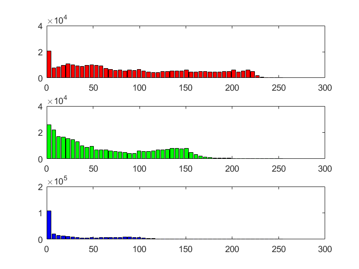

Contents
Reset the Program
clear all; close all;
Load the image
Here I am going to read in the image and store it in a variable img
img = imread('gogol.jpg');
Display the image
Show the image with imshow()
imshow(img)

Now I am going to use image()
image(img)
Finally I am going to use imagesc()
imagesc(img)
Resizing the Image
resized_img = imresize(img, [256 256]); image(resized_img);
Cropping face image
Here I am extracting the face from the full image.
face_img = img(75:520,100:400,:); image(face_img)
Replacing Face Region with colored boxes
Create a copy of the image.
boxed_face_img = img(:,:,:);
Add in the white stripe first
boxed_face_img(75:520,100:159,1:3) = 255;
Add in the black stripe next
boxed_face_img(75:520,160:219,1:3) = 0;
Add in the Red stripe next
boxed_face_img(75:520,220:279,1) = 255; boxed_face_img(75:520,220:279,2:3) = 0;
Add in the Blue stripe next
boxed_face_img(75:520,280:339,1) = 0; boxed_face_img(75:520,280:339,2) = 0; boxed_face_img(75:520,280:339,3) = 255;
Add in the Green stripe next
boxed_face_img(75:520,340:400,1) = 0; boxed_face_img(75:520,340:400,2) = 255; boxed_face_img(75:520,340:400,3) = 0;
Finally show the iamge
image(boxed_face_img);
Resize face image
face_img_resized = imresize(face_img, [64 64]); image(face_img_resized);
Save Images
Save the resized full image
imwrite(resized_img, 'gogol_256.jpg');
Save the resized face image
imwrite(face_img_resized, 'gogol_face_64.jpg');
Histograms of full image
Extract each of the color channels. The channels need to be convered to doubles in order for hist to work.
full_red = double(img(:,:,1)); full_green = double(img(:,:,2)); full_blue = double(img(:,:,3));
Get the histograms for each. Remebering to convert each matrix to an array
nBins = 50; [count_red, centers_red] = hist(full_red(:), nBins); [count_green, centers_green] = hist(full_green(:), nBins); [count_blue, centers_blue] = hist(full_blue(:), nBins);
Plot it
plot(centers_red, count_red, 'Red', centers_green, count_green, 'Green', centers_blue, count_blue, 'Blue');
Histograms of face image
Extract each of the color channels again converting it to doubles.
face_red = double(face_img(:,:,1)); face_green = double(face_img(:,:,2)); face_blue = double(face_img(:,:,3));
Get the histograms for each.
[count_red_face, centers_red_face] = hist(full_red(:), nBins); [count_green_face, centers_green_face] = hist(full_green(:), nBins); [count_blue_face, centers_blue_face] = hist(full_blue(:), nBins);
Plot it
plot(centers_red_face, count_red_face, 'Red', centers_green_face, count_green_face, 'Green', centers_blue_face, count_blue_face, 'Blue');